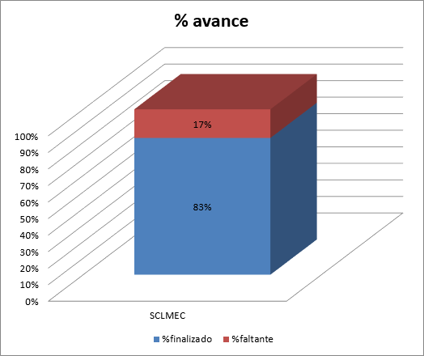

Misión: El Laboratorio de Equipo de Cómputo debe contar con un sistema que no dependa del sistema operativo de la máquina de los usuarios, y que la información sea almacenada en un servidor y no de manera local, y automatice el control de los servicios que presta el laboratorio.
Alcance: Desarrollar una aplicación Web que permita registrar y dar
seguimiento a las órdenes de servicio de mantenimiento de equipo de
cómputo que ingresan al Laboratorio de Mantenimiento y Equipo de
Cómputo de la Facultad de Matemáticas.
Estado al 20 de Junio de 2014

| Resumen del proyecto | |||||||||
|---|---|---|---|---|---|---|---|---|---|
| Actividades | Fecha de inicio | Fecha de finalizado | No. Días | %finalizado | %faltante | Fecha Actual | Días transcurridos | %planeado | %desfase |
| Proyecto SCLMEC | 27/06/2012 | 22/08/2014 | 453 | 83% | 17% | 20/06/2014 | 420 | 93% | 10% |
| Resumen por actividades | |||||||||
|---|---|---|---|---|---|---|---|---|---|
| No. de Tarea | Tareas | Fecha de inicio | Fecha de finalizado | No. Días | % del Proyecto | %finalizado | %faltante | Avance en días | Días faltantes |
| 1 | Versión 0.1.0 | 27/06/2012 | 21/05/2013 | 185 | 41% | 99% | 1% | 183.15 | 1.85 |
| 2 | Versión 0.2.0 | 22/05/2013 | 18/12/2013 | 133 | 29% | 99% | 1% | 131.67 | 1.33 |
| 3 | Versión 0.3.0 | 06/01/2014 | 17/02/2014 | 30 | 7% | 94% | 6% | 28.2 | 1.8 |
| 5 | Versión 0.4.0 | 18/02/2014 | 28/03/2014 | 25 | 6% | 62% | 38% | 15.5 | 9.5 |
| 6 | Versión 0.5.0 | 31/03/2014 | 11/06/2014 | 40 | 9% | 40% | 60% | 16 | 24 |
| 7 | Versión 0.6.0 | 12/06/2014 | 22/08/2014 | 40 | 9% | 0% | 100% | 0 | 40 |
| Total | 27/06/2012 | 22/08/2014 | 453 | 100% | 83% | 17% | 374.52 | 78.48 | |